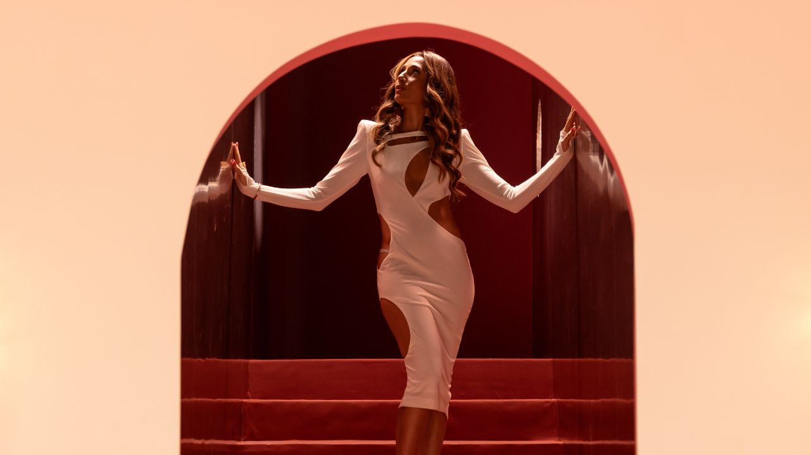

“Beleza Fatal”, novela Original da HBO Max, estreia na TNT em 16 de março

Fenômeno no streaming, produção amplia alcance e passa a integrar a programação da TV por assinatura — com exibição diária de segunda a sexta, às 22h30, além de reprises no almoço e maratona aos sábados à tarde.
Sucesso de audiência e engajamento na HBO Max, BELEZA FATAL ganha uma nova janela de exibição e estreia na TNT em 16 de março de 2026, reforçando a estratégia do canal de apostar em produções locais com forte conexão com o público. No elenco, estão Camila Pitanga, Camila Queiroz, Giovanna Antonelli, Julia Stockler, Caio Blat, Herson Capri, Marcelo Serrado, Murilo Rosa e Augusto Madeira.
Além de alcançar quem ainda não acompanhou a trama no streaming, a chegada à TNT convida o público a revisitar a novela em um ritmo de TV: um episódio por dia, com exibição de segunda a sexta-feira, às 22h30, e um esquema de reprises pensado para diferentes hábitos de consumo.
Como será a exibição na TNT
Episódio inédito na grade: de segunda a sexta, às 22h30
Reprise diária (faixa do almoço): de segunda a sexta
Maratona semanal: 5 episódios seguidos aos sábados, na faixa da tarde
Primeira novela nacional original da HBO Max no Brasil, BELEZA FATAL se consolidou rapidamente como um dos títulos de maior repercussão da plataforma, com uma narrativa marcada por drama, ambição, vingança e dilemas morais contemporâneos. Na TNT, a produção também inaugura um marco para o canal: é a primeira novela exibida em sua programação.
“A chegada de BELEZA FATAL à TNT é um marco muito especial para nós, pois trata-se de uma novela original, criada para o streaming, que agora ganha ainda mais alcance ao entrar na programação do canal. Esse movimento não só evidencia a força do gênero junto ao público brasileiro, como também a potência da história e dos personagens”, afirma Monica Pimentel, Vice-Presidente de Conteúdo e Head de Talentos da Warner Bros. Discovery Brasil.
Números e repercussão no streaming
Segundo dados divulgados no material, na última semana de exibição, em março de 2025, a novela foi o título nº 1 da plataforma no Brasil e na América Latina em alcance, aquisições e horas assistidas — além de se tornar a produção brasileira mais assistida da história da plataforma desde o lançamento em fevereiro de 2024. Ainda de acordo com o comunicado, nos capítulos finais houve alta de 30% em horas assistidas em relação à semana anterior e crescimento de 20% na audiência total no mesmo período.
O texto também cita a Parrot Analytics, indicando que, no dia da estreia, a demanda por BELEZA FATAL teria sido 24 vezes superior à média dos títulos da plataforma, chegando a 70 vezes a média ao final dos 40 episódios.
Serviço
BELEZA FATAL (novela Original HBO Max)
Estreia na TNT: 16 de março de 2026
Exibição: segunda a sexta, 22h30 (1 episódio por dia)
Reprises: segunda a sexta (faixa do almoço) + maratona de 5 episódios aos sábados (faixa da tarde)